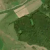
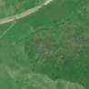

2,9 ha de pădure schimbată lângă Felmer
Între vara lui 2025 și 4 mai 2026, pe aproximativ 2,9 ha de pădure din comuna Șoarș, lângă Felmer, județul Brașov, imaginile Sentinel-2 arată că vegetația a dispărut sau s-a schimbat puternic. E o schimbare care merită verificată.
Autorizația de tăiere
de confirmat pe poze
N-am găsit o autorizație care să acopere zona, dar nu putem spune ce s-a întâmplat aici: analistul AI fie n-a văzut încă pozele, fie le-a văzut și nu e sigur. Nu dăm roșu pe o bănuială, și nici nu spunem că e în regulă. Analistul crede că e pădure tăiată, dar nu e sigur: pozele sunt neclare sau schimbarea e la limită.
Ce se vede în poze: În poza detaliată și în poza «înainte» zona marcată era pădure deasă. În poza «după» pădurea pare rărită și pestriță, cu pământ sau iarbă între copaci, dar nu se vede un teren gol cu margini clare, deci nu pare o tăiere rasă.


Înainte și după: Copernicus Sentinel-2, 10 m pe pixel, conturul zonei cu portocaliu. Poza detaliată (Esri World Imagery) e de acum 1–4 ani: arată ce era acolo înainte, nu tăierea.
Pe scurt
- Identificator
- 20260504_45913_24970
- Locul
- Felmer, comuna Șoarș, județul Brașov (SIRUTA 41943)
- Coordonate (centru)
- 45.91259, 24.97020 · Google Maps · OpenStreetMap
- Suprafața
- 2,9 ha (din pixeli de 10 m; ± câțiva pixeli pe margine)
- Pădurea întreagă
- în vara lui 2025 (de atunci, nori sau iarnă)
- Prima imagine cu schimbarea
- 4 mai 2026
- Imagini în care se vede schimbarea
- 4
- Cât de sigur e semnalul din satelit
- scăzută
- Terenul
- în afara amenajamentelor silvice publicate (pășune, mal de apă sau pădure privată fără amenajament în registru)
- Arie protejată
- Podișul Hârtibaciului
- Garda Forestieră
- Brașov
Dacă vrei să verifici sau să sesizezi
- Pădurile din județul Brașov sunt în grija Gărzii Forestiere Brașov, care controlează tăierile și dă amenzile.
- Formularul Gărzii Forestiere Naționale primește sesizări și fără nume. Trimite linkul acestei pagini, coordonatele și pozele. Dacă tăierea e în desfășurare, sună la 112.
- Autorizațiile și transporturile de lemn se pot căuta în Inspectorul Pădurii.
Pagina arată ce se vede din satelit și ce scrie în registrul public; nu e o dovadă în sine.
Cum citezi zona
Linkul acestei pagini nu se schimbă. Dacă zona iese vreodată de pe hartă, pagina rămâne, cu data și cu ce știam despre ea.
Pădurea RO, zona 20260504_45913_24970: 2,9 ha, Felmer, comuna Șoarș, județul Brașov; schimbare văzută din satelit între vara lui 2025 și 4 mai 2026. https://iliemihai.github.io/padurea-ro/zona/20260504_45913_24970/ (consultat la [data]). Date: CC BY 4.0.
Datele zonei: GeoJSON · toate zonele: date deschise · licența CC BY 4.0.
Istoricul zonei pe hartă
Starea se poate schimba când registrul publică o autorizație sau când analistul vede poze mai bune. O ținem aici, ca un link citat să arate și ce spuneam atunci.
Pe hartă cel târziu din 5 noiembrie 2026.
- 5 noiembrie 2026 – azi · de confirmat pe poze
Detalii tehnice, pentru verificare
De ce acest nivel de încredere:
- văzută schimbată în 4 imagini diferite
- ultima dată am văzut-o intactă în vara lui 2025 (de atunci, nori sau zăpadă)
- fără părerea AI
Ce a văzut analistul cu context: Coronamentul închis din 2024 (poza detaliată) și din 2025-08-30 devine în 2026-05-27 un amestec cenușiu-verzui, cu textură punctată, fără pământ dezgolit sau margini drepte. Petecul afectat depășește conturul și se vede și în vederea largă, spre deosebire de pădurea din jur, care rămâne mai verde. Faptele (94% coronament în 2000, 100% copaci, zonă protejată, fără autorizație de tăiere) susțin pădure închisă înainte. Rărirea sau o afectare a coronamentului (defoliere, doborâturi) rămâne incertă, iar o diferență de fenologie nu poate fi exclusă.
- Placa Sentinel-2
- 34TGR
- NDVI de referință
- 0.9
- NBR de referință
- 0.62
- Scăderea în pădurea din jur
- 0.07
- Persistență
- 0.59
- NDVI / NBR după
- 0.615 / 0.227
- Analistul cu context (model)
- rarire · 0.45
Cum se calculează fiecare: metodologia.
Pune harta zonei într-un articol
Copiază codul în articol (merge în majoritatea site-urilor de știri). Sau pune doar linkul: WhatsApp, Facebook și X arată singure poza zonei.